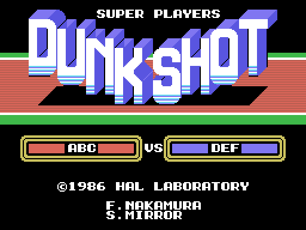

The checks were made with openMSX and the C-BIOS_MSX1_JP machine. The script tools/omsx_vuelca.tcl presses the keys it is told at the seconds it is told and dumps the whole VRAM, the RAM from 0xC000 up and the VDP registers; tools/lanza_vuelca.sh launches it:
sh tools/lanza_vuelca.sh work/v_titulo "6 12"
sh tools/lanza_vuelca.sh work/v_partido2 "16 20 25 30 45" "4 8 0x01 8 8 0x01 12 8 0x01"
sh tools/lanza_vuelca.sh work/v_menus "12 19 26" "4 8 0x01 7 8 0x40 9 8 0x01 14 8 0x40 16 8 0x01"Keys go as second row mask of the keyboard matrix: space is row 8 with 0x01 and down is row 8 with 0x40. Space at seconds 4, 8 and 12 takes you from the title to the menu, from there to SET-UP and from there to the match.
Then tools/coteja.py compares the built VRAM with the dump: the name table and, for each third, the pattern and colour of the tiles in use. What is left in VRAM from earlier screens and not used does not count.
python3 tools/coteja.py work/partido_12.vram work/v_partido2/t020.vram work/v_partido2/t020.regsAt 0 differences: the title (two dumps), the first menu, SET-UP, the team card, LOAD DATA with SURE? and with ERROR!, and the match at the tip-off (two dumps, with the window at column 12). And the 24 sprites of the six players in those two dumps: pose, patterns, colours and the foot position that follows from the four offsets.

The dumps do not travel with the repository; what travels is the sha256 of each built VRAM (tests/test_juego.py), so that a change in the decompressors or in the build shows up in the tests.